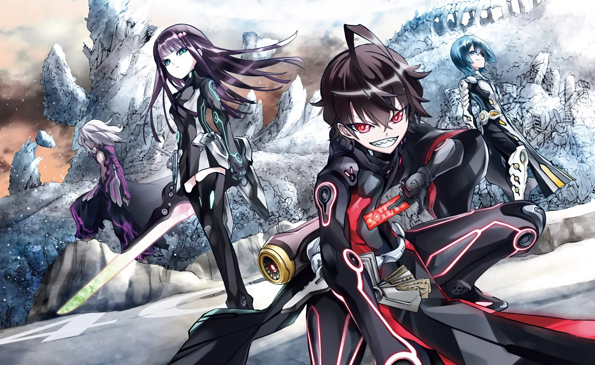
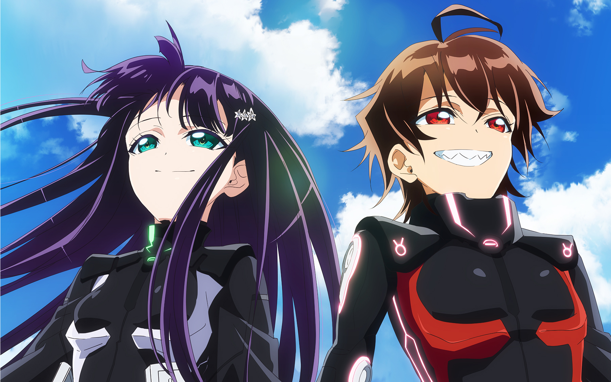
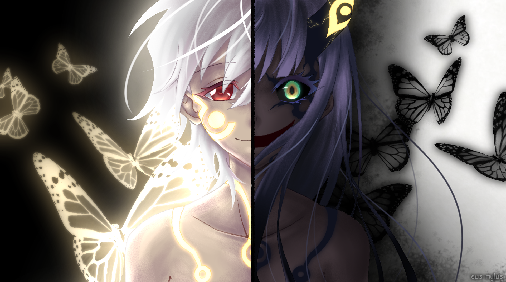
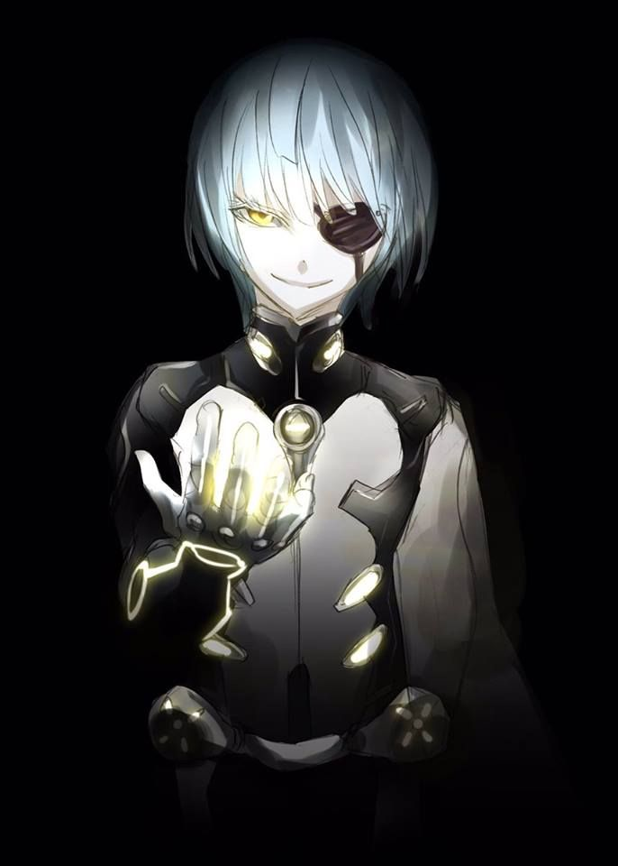

Twin Star Exorcist é um mangá japonês de ação, fantasia, sobrenatural e shōnen escrito e ilustrado por Yoshiaki Sukeno sobre um par de jovens talentosos exorcistas que de acordo com uma profecia estão destinados a se casarem e terem um filho que será um lendário exorcista. Tendo como inspiração um casal da vida real que passará e estam situados a ter esse filho. A série é publicada no Japão pela editora Shueisha em sua revista Jump Square, e é publicada em inglês pela editora Viz Media. Uma adaptação para anime feito pelo estúdio Pierrot começou a ser exibida em 6 de abril de 2016.

Enredo
<
Rokuro Enmado é um garoto que costumava ser um poderoso aspirante a exorcista, antes de um trágico incidente que deixou os seus amigos mortos e o fez abandonar a profissão. Um dia, ele tem um encontro fatídico com Benio Adashino, uma menina em torno de sua idade e que uma exorcista muito talentosa do leste. De acordo com a profecia, Rokuro e Benio são os "Exorcistas da Estrela Gêmea", e estão destinados a se casar e ter uma criança conhecida como Miko, que será o exorcista mais poderoso de todos os tempos, capaz de limpar todos os espíritos malignos, ou Kegare, do mundo e acabar com a guerra que dura mais de um milênio.
Exorcistas da Estrela Gêmea
Os exorcistas da Estrela Gêmea são um casal de exorcistas destinados a ser os pais da "Miko", a reencarnação de Abe no Seimei o exorcista supremo que se diz ser capaz de limpar todo tipo de espírito maligno. Os exorcistas da Estrela Gêmea também têm uma habilidade especial e exclusiva chamada "Ressonância", que lhes permite combinar suas forças para aumentar o poder de seus ataques ou habilidades de acesso que nenhum outro exorcista possui.
Benio e Rokuro

O principal protagonista. Um exorcista impetuoso e obstinado de 14 anos que uma vez quis ser o mais forte e exorcizar todos os Kegare e pecados. Antes de ingressar no Dormitório Hiinatsuki, Rokuro foi encontrado por Seigen em Magano quando ele tinha 6 anos e não tinha memória de seu passado, então Ryougo o levou para o Dormitório. No entanto, uma tragédia há dois anos ocorreu que o obrigou a tirar a vida de seus amigos, que tinham sido corrompidos a força, no dormitório Hiinatsuki onde cresceu. Depois disso, seu braço direito foi corrompido também e se tornou parte Kegare com grande poder. Esta tragédia o fez largar o exorcismo até encontrar Benio, que o inspira a lutar novamente como exorcista, apesar de não gostar da ideia de estar noivo dela a princípio, mais tarde desenvolve sentimentos por ela. Descobre-se que o Espírito Guardião de Rokuro é Abe no Seimei.
A heroína principal. Uma menina séria de 14 anos, ela prometeu se tornar o exorcista mais forte e destruir todos os Kegare para vingar seus pais, que morreram protegendo-a. Ela usa uma máscara de raposa na batalha. Ao encontrar Rokuro, ela o inspirou a voltar a ser um exorcista, e apesar de não concordar com a ideia de se tornar sua noiva, ela secretamente admira-o por sua persistência em combate, alegando que é sua única qualidade. Benio adora Ohagi. Ela perde ambas as pernas na batalha com Yūto, mas no processo, obtém as pernas de impureza como substituições por Kamui (como o braço de Rokuro) aumentando suas habilidades de velocidade para lutar ao lado de Rokuro. Depois do intervalo de tempo, ambos parecem ter ficado ainda mais próximos com Benio silenciosamente notando que ela se apaixonou por ele.

Principal Vilão

Yuuto Ijika é o irmão gêmeo mais velho de Benio Adashino. Ele é um velho amigo que se converteu em inimigo de Rokuro Enmadou, e o cérebro por trás da tragédia Hinatsuki. Yuuto é um jovem de cabelos azuis que é mantido em um penteado corte tigela, ele tem olhos de cor dourada e usa um tapa-olho sobre o olho esquerdo e é visto vestindo um uniforme branco com desenhos azul escuro nas laterais das mangas e no zíper. Antes que ele tivesse um remendo de olho, ele tinha olhos azuis combinando com a cor de seu cabelo.